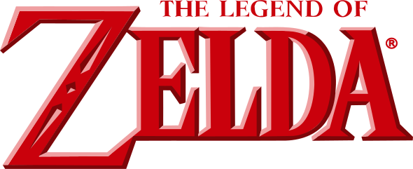

¡Bienvenido!
Esta es una página sobre la saga de videojuegos The Legend of Zelda, aquí podrás encontrar información sobre los distintos títulos, personajes y monstruos de la saga.
Esto no es más que un ejercicio, donde trabajamos como recuperar datos desde una API usando AJAX y JQUERY.
Puedes visitar la api usada pulsando aquí.
| The Legend of Zelda | |
|---|---|
|  | |
| Información general | |
| Creador | Shigeru Miyamoto y Takashi Tezuka |
| Desarrollador | Nintendo, Capcom, Monolith Soft, Grezzo |
| Distribuidor | Nintendo |
| Diseñador | Shigeru Miyamoto, Takashi Tezuka |
| Compositor | Koji Kondo (compositor principal), Hajime Wakai (director de sonido) |
| Datos del juego | |
| Género | Acción y aventura |
| Primer videojuego | The Legend of Zelda (21 de febrero de 1986) |
| Último videojuego | The Legend of Zelda: Tears of the Kingdom (12 de mayo de 2023) |
| Idiomas | inglés |
| Plataformas | Game & Watch, Nintendo Entertainment System, Super Nintendo, Game Boy, Game Boy Color, Game Boy Advance, Nintendo 64, Nintendo DS, Nintendo GameCube, Wii, Nintendo 3DS, Wii U, Nintendo Switch |
| Formato | Cartucho, Nintendo Optical Disc, descarga digital |
| Desarrollo | 21 de febrero de 1986 |
The Legend of Zelda (ゼルダの伝説でんせつ Zeruda no Densetsu?) es una serie de videojuegos de acción-aventura creada por los diseñadores
japoneses Shigeru Miyamoto y Takashi Tezuka, y desarrollada por Nintendo, empresa que también se encarga de su distribución internacional.
Su trama por lo general describe las heroicas aventuras del joven guerrero Link, que debe enfrentarse a peligros y resolver acertijos para ayudar a la Princesa Zelda
a derrotar a Ganondorf y salvar su hogar, el reino de Hyrule.
A partir del lanzamiento del primer juego en 1986, The Legend of Zelda ha logrado una notable popularidad acompañada de críticas favorables en la industria de los videojuegos, traducidas en un cuantioso éxito comercial a nivel internacional —hasta abril de 2020 se calculan más de 113 millones de copias vendidas de sus juegos; para las ventas específicas de cada título de la franquicia, véase la sección Comercial—. La continuidad cronológica de los juegos ha sido objeto de debate con el transcurso del tiempo, debido a la incertidumbre en la identificación de los vínculos entre ciertos títulos. Nintendo publicó la cronología definitiva de The Legend of Zelda en el libro Hyrule Historia (2011), en la cual se explica que existen tres líneas de tiempo diferentes, las cuales dependen primordialmente de Link.
En un principio, Nintendo no consideraba que el videojuego de Miyamoto y Tezuka fuera a alcanzar notoriedad en el mercado japonés, aunque poco después se convenció de su impacto. En 1987 el primer juego había logrado vender un millón de copias y, tras su distribución en otros países, se comercializaron tres millones de copias más. Esto ayudó a incrementar el número de ventas de la consola Nintendo NES, la primera fabricada por Nintendo. Con el transcurso del tiempo, la serie ha obtenido numerosas críticas positivas en la industria de los videojuegos. Así, la prestigiosa revista japonesa Famitsu destacó a Ocarina of Time, The Wind Waker, Skyward Sword y Breath of the Wild como «juegos perfectos», mientras que la mayoría de los otros títulos fueron reconocidos como los mejores estrenos en sus respectivos años de lanzamiento, como en el caso de A Link to the Past —considerado por Game Rankings como el segundo mejor juego de 1992 para la plataforma Super Nintendo— y Twilight Princess —considerado como el «mejor juego» de 2006 por el sitio web Game Informer—.
La franquicia de The Legend of Zelda incluye una serie animada de televisión transmitida en 1989, así como numerosos mangas, novelas y libros publicados bajo la licencia de Nintendo, aunque ninguno de estos se consideran canónicos.
A partir del lanzamiento del primer juego en 1986, The Legend of Zelda ha logrado una notable popularidad acompañada de críticas favorables en la industria de los videojuegos, traducidas en un cuantioso éxito comercial a nivel internacional —hasta abril de 2020 se calculan más de 113 millones de copias vendidas de sus juegos; para las ventas específicas de cada título de la franquicia, véase la sección Comercial—. La continuidad cronológica de los juegos ha sido objeto de debate con el transcurso del tiempo, debido a la incertidumbre en la identificación de los vínculos entre ciertos títulos. Nintendo publicó la cronología definitiva de The Legend of Zelda en el libro Hyrule Historia (2011), en la cual se explica que existen tres líneas de tiempo diferentes, las cuales dependen primordialmente de Link.
En un principio, Nintendo no consideraba que el videojuego de Miyamoto y Tezuka fuera a alcanzar notoriedad en el mercado japonés, aunque poco después se convenció de su impacto. En 1987 el primer juego había logrado vender un millón de copias y, tras su distribución en otros países, se comercializaron tres millones de copias más. Esto ayudó a incrementar el número de ventas de la consola Nintendo NES, la primera fabricada por Nintendo. Con el transcurso del tiempo, la serie ha obtenido numerosas críticas positivas en la industria de los videojuegos. Así, la prestigiosa revista japonesa Famitsu destacó a Ocarina of Time, The Wind Waker, Skyward Sword y Breath of the Wild como «juegos perfectos», mientras que la mayoría de los otros títulos fueron reconocidos como los mejores estrenos en sus respectivos años de lanzamiento, como en el caso de A Link to the Past —considerado por Game Rankings como el segundo mejor juego de 1992 para la plataforma Super Nintendo— y Twilight Princess —considerado como el «mejor juego» de 2006 por el sitio web Game Informer—.
La franquicia de The Legend of Zelda incluye una serie animada de televisión transmitida en 1989, así como numerosos mangas, novelas y libros publicados bajo la licencia de Nintendo, aunque ninguno de estos se consideran canónicos.